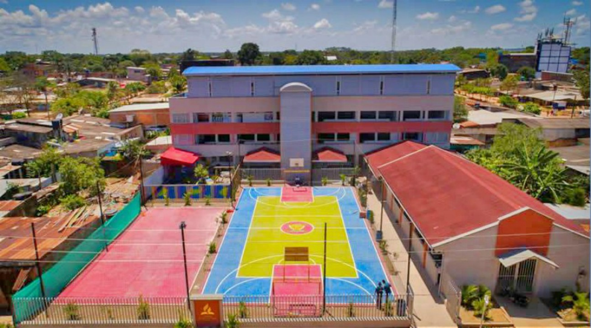
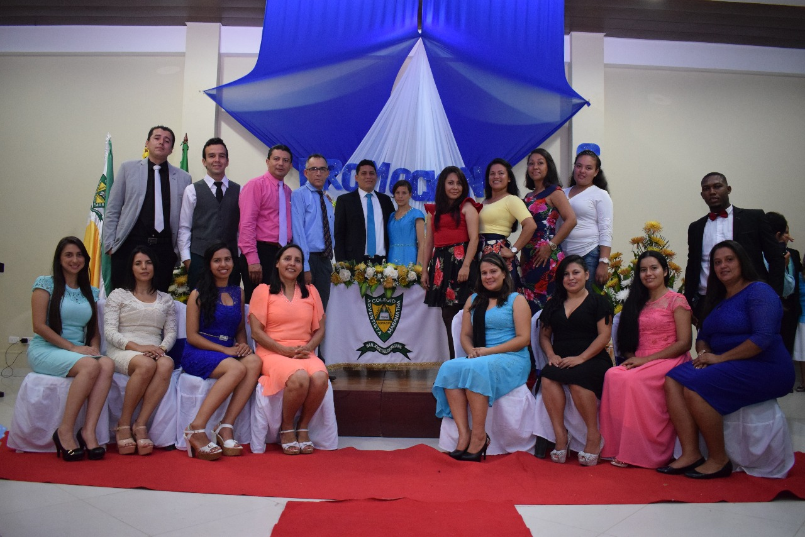
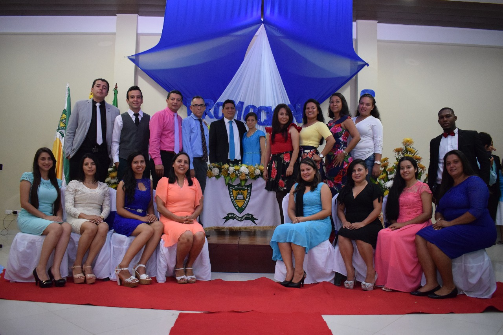
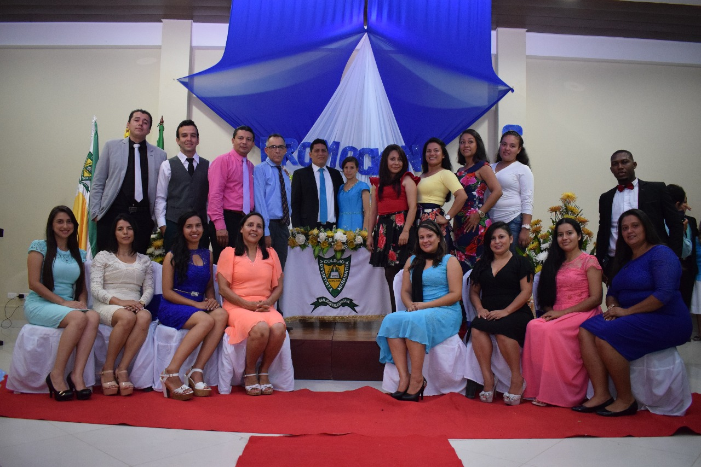
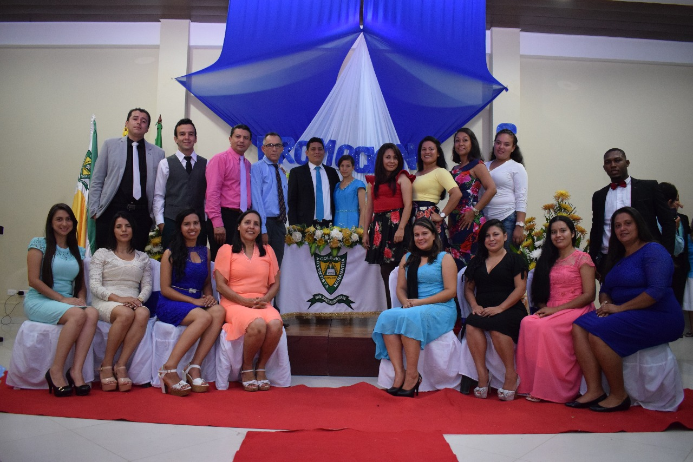
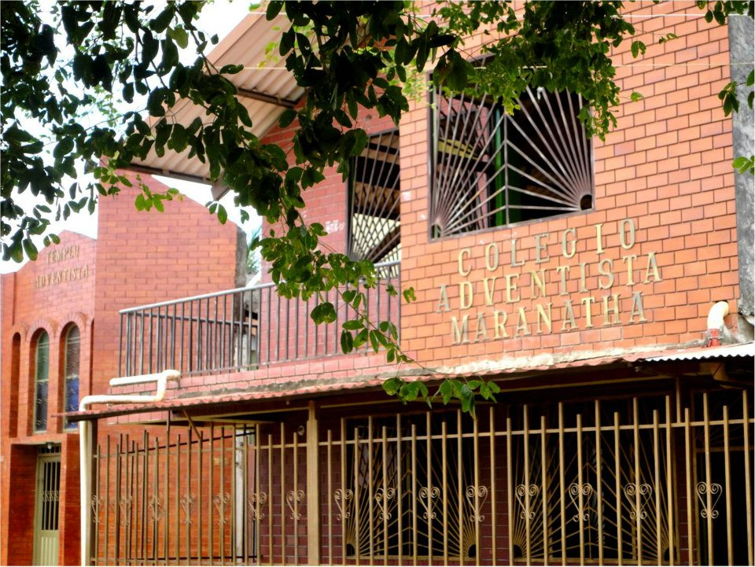
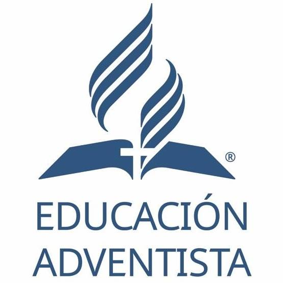
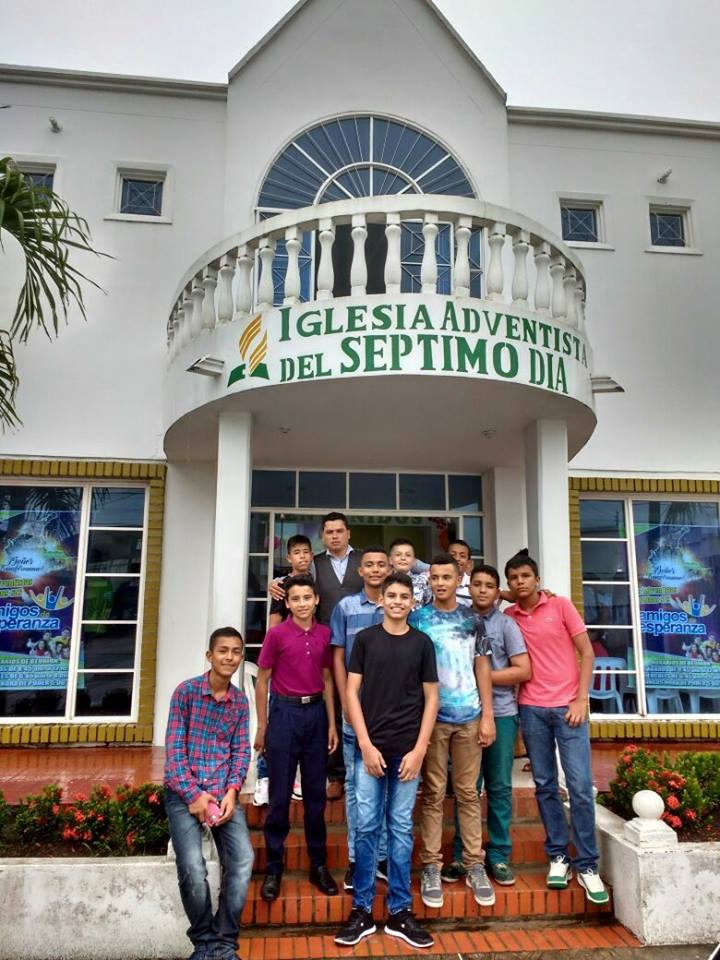
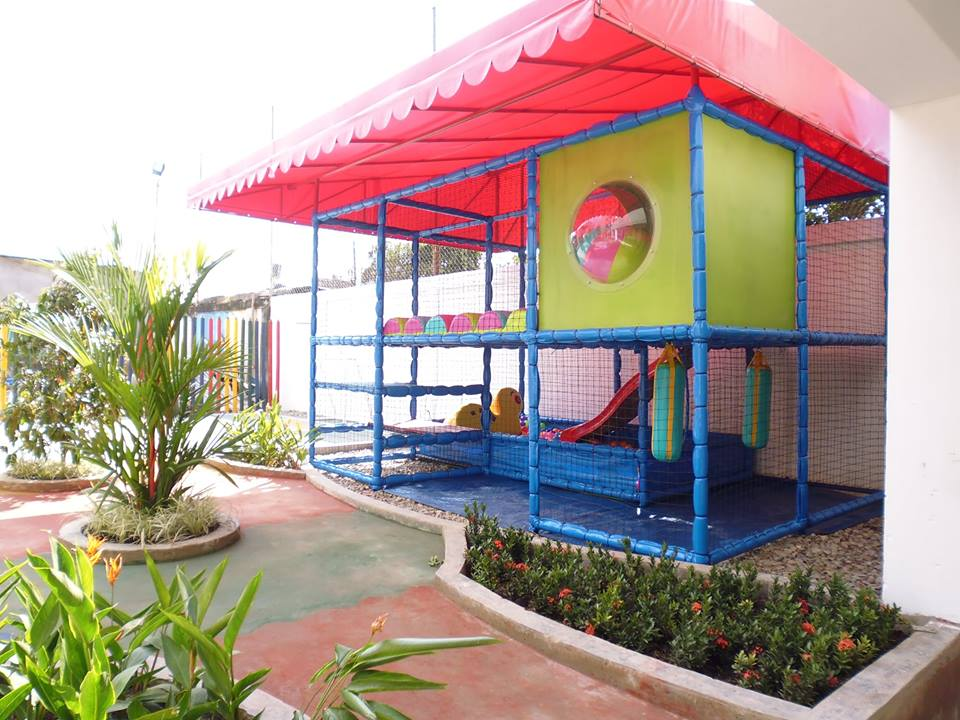
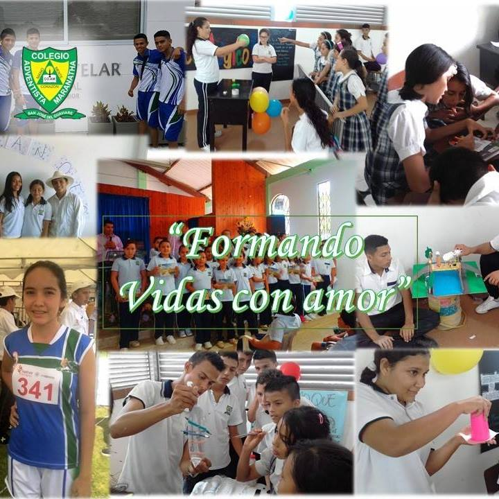

 




El Colegio Adventista Maranatha está ubicado en el barrio El Porvenir en la Carrera 18 # 11 – 53 del municipio de San José del Guaviare. Funciona en jornada única, en horas de la mañana y para los niveles de Preescolar, Básica y Media Académica. Funciona bajo el patrocinio y fundamentación religiosa (Ley 133 de 1994) de la Iglesia Adventista del Séptimo Día Sección Asociación de los Llanos Orientales, con el propósito de beneficiar a la comunidad Adventista con un programa de educación integral basado en los principios del verdadero cristianismo y en las más altas normas de la cultura y la moralidad.
Siendo conscientes de las necesidades de la comunidad cristiana, los miembros de la iglesia Adventista de San José del Guaviare tuvieron el deseo de fundar una institución para formar a sus hijos; en horas de la tarde del 10 de noviembre de 1971 los feligreses de la iglesia Adventista del Séptimo Día se reunieron para la fundación, durante el años siguiente se hicieron los preparativos y en 1973 inició como escuela de iglesia, en ese mismo año, tomó el nombre de Instituto Educativo La Libertad, en un solo salón de clase con la metodología Escuela Nueva, con resolución de funcionamiento de la Secretaria de Educación de la Comisaria Espacial del Guaviare con 80 alumnos en doble jornada.
Su primera Directora fue la señora Gladys Torres (1973-1977 y 1979) desde entonces Se ha contado con líderes capacitados como rectores que han desempeñado cada una de las labores con la dirección de Dios, desarrollando cada uno de los proyectos de gestión para hacer de la Institución un Colegio fundamentado en la Filosofía de la Educación Adventista, basada en principios y valores que sirva a Dios y a la sociedad tales como: Elvia Bueno (1978), Esperanza V. (1980), Mariela Vargas (1981-1984), Myriam Stella Castro (1985-1986), María de Gómez (1987-1992), Elías Montealegre (1993), Yolanda Carvajal (1994-1996), Jhon Jairo Valderrama (1997-1998), Mariana Alfonso (1999-2003), Hernán Darío Mera (2004-2006) Oscar Javier Pérez Gaona (2007), Julián Ruiz (2008-2009), Misael Hernández (2009), Miguel Ángel Bueno (2010-2012), Gloria Milena Cuitiva (2012) Juan Carlos García (2013 - 2014) y Araldo Úsuga Flórez rector actual. Desde 2015 El Colegio Adventista Maranatha de San José del Guaviare cuenta con Acreditación por parte de la Adventist Accrediting Association.
La razón de ser de la Institución es dar a conocer a Jesús como Salvador, fundamentar a los estudiantes en su vida espiritual por medio del estudio de la Biblia y el impacto a la comunidad por medio de los diferentes proyectos. La Institución abre también sus puertas, sin distinción de sexo, raza, credo o color a todos los estudiantes de nobles ideales, que deseen acudir a sus aulas para aprovechar las ventajas de una educación cristiana. Nuestra educación es altamente reconocida por tener un comprobado sentido de pertenencia Cristocéntrica formando personas de gran conducta social y espiritual ya que bajo la dirección del Espíritu Santo, el carácter y los propósitos de Dios pueden entenderse tal como están revelados en la naturaleza, la Biblia y en el ejemplo de Jesucristo. Las características distintivas de la educación adventista -basadas en las Sagradas Escrituras y en libro “La Educación” (Autora: Elena G. de White); destacan el propósito redentor de la verdadera educación: restaurar a los seres humanos a la imagen de su Hacedor.

Glorificar a Dios y bajo la influencia del Espíritu Santo, guiar a cada miembro de la comunidad educativa del Colegio Adventista Maranatha, a una experiencia personal y transformadora con Cristo que lo capacite como discípulo para compartir el evangelio con toda persona.
Ajustada al contexto de San José del Guaviare “Somos una Institución Educativa cristiana cuya misión es glorificar a Dios y bajo la influencia del Espíritu Santo guiar y capacitar a niños, niñas y jóvenes en los niveles de Preescolar, Básica y Media para que sean líderes, eficientes, servidores, competentes y autónomos, con formación integral, capaces de compartir valores éticos y morales mediante el servicio a la comunidad”.
Cada miembro de la comunidad educativa del Colegio Adventista Maranatha de San José del Guaviare preparado para el reino de Dios.
Ajustada al contexto de San José, Guaviare “Para el año 2018 el Colegio Adventista Maranatha de San José del Guaviare se propone ser una institución de calidad y líder en la formación de hombres y mujeres preparados integralmente para la vida actual y futura”.
Consta de un doble escudo que es símbolo de la fe, representa la fislosía de la educación Adventista enseñada en nuestro colegio, en medio de los 2 escudos las palabras COLEGIO ADVENTISTA MARANATHA y con color verde que simbolo de la riqueza floral y de la esperanza. Dentro del escudo mas pequeño esta el triangulo que que significa la Deidad: Padre, Hijo y Espíritu Santo, sobre la parte izquierda del triangulo se encuentra la palabra Mano (Actuar), al lado derecho la palabra Menta (Pensar) y en la parte inferior la palabra Corazón (Sentir). Dentro del triangulo encontramos la biblia abierta de color blanco (Pureza) con una vela encima de ella que simboliza la palabra de Dios que ilumina la vida a travez de el Espíritu Santo y es la fuente de toda sabíduria. En la parte inferior se encuentra una cinta verde con letras blancas que indican la ciudad sede de nuestra institución: San José del Guaviare.
Esta consta de tres franjas horizontales de igual tamaño y sus colores son:
Verde: En la parte superior, es símbolo de la abundante riqueza floral del Guaviare, además simboliza la esperanza.
Blanco:
Amarillo: En la parte inferior, es símbolo de lealtad
HIMNO DEL COLEGIO ADVENTISTA MARANATHA
Letra: Sebastian Rey Ramírez
Música: Carlos Arturo Sánchez
Una fuerza, un sentimiento, una gran educación,
Florecemos estudiando en la grandeza del Señor
Apreciamos la obediencia, el respeto y el amor,
CORO
Construyendo cada día un futuro sin igual
Marcando derroteros para el triunfo celestial
Hoy cantamos a tu nombre, exaltamos tu labor,
Colegio Adventista Maranatha:
Formando vidas con amor
II
Los maestros nos enseñan del amor del Salvador,
Estudiantes altruistas al servicio del Señor.
Todos somos la familia del COAM educador,
Inspirando nuestra vida a un futuro encantador.
Requisitos para Matrícula Estudiantes Nuevos
Requisitos para Matrícula Estudiantes Antiguos
Nota: Todas las carpetas deben tener sus documentos actualizados, si falta alguno que no haya traído en años anteriores no se podrá iniciar proceso de matrícula.

El Plan Maestro de Desarrollo Espiritual es el termómetro que marca el grado de espiritualidad en una institución adventista. Asimismo, creemos que cada Administrador, docente y personal de servicio, debe estar inmerso en el cumplimiento de dicho plan, ya que ello direcciona un correcto uso de la autoridad y facilita un cumplimiento cabal de las responsabilidades recibidas no solo por el hombre, sino por el mismo Dios. Por último, creemos que, así como en el Edén, la educación comenzó teniendo a Dios como maestro, toda la Plana administrativa, plana docente, personal de servicio, alumnado y padres de familia, puedan ser “Enseñados por Jehová; para que la paz se multiplique en nuestros hijos” Isaías 54:13.
La espiritualidad es necesariamente un asunto individual, sin embargo, dentro de una institución de carácter cristiano, no se puede dejar de lado la responsabilidad que ella manifiesta a todo un sistema educativo, ya que no hablamos de un desarrollo individual sino de uno que es netamente integral. Las escuelas y colegios adventistas deben promover y nutrir intencionalmente la vida espiritual de sus estudiantes, a la par del desarrollo integral de su personal docente, administrativo y padres de familia. Esto será una realidad por medio de las interacciones personales y actividades que nos ayuden a forjar una creencia fundamental, un principio y un valor en la vida de cada uno de los conforman el COAM. Basados en estas premisas el Plan Maestro de Desarrollo Espiritual presenta la declaración de la filosofía de la EU (Educación Adventista), algunos consejos del espíritu de profecía en relación a la gran obra de la educación adventista, asimismo, presentamos la misión que la AG (Asociación General de los Adventistas del Séptimo Día), basados en las escrituras, estipula para la EU. Seguido a esto, entrando al ámbito del Colegio Adventista Maranatha (COAM), presentamos su misión y visión, algunos datos de referencia de índole descriptivo y de información general (Ubicación, personal administrativo, personal docente y datos cuantitativos respecto al alumnado). Por último, se hace una descripción detallada acerca del Plan Maestro de Desarrollo Espiritual (PMDE), mencionando los objetivos generales y específicos, asimismo, se detallan las estrategias a seguir para el presente año escolar 2017. Para acceder al documento completo da click Aqui
* Si quieres conocer el programa institucional de quiero vivir Sano da Click Aqui
Si quieres conocer el programa Institucional de quiero Crecer Sano da Click Aqui

Cada estudiante, puesto que es criatura de Dios, constituye el centro de atención de todo el esfuerzo educativo y, por consiguiente, debe sentirse aceptado y amado.
El propósito de la educación adventista es ayudar a los alumnos a alcanzar su máximo potencial y a cumplir el propósito que Dios tiene para su vida.
Pasado y futuro: un presente para ti…
En el pasado, ellos soñaban con su futuro y se preparaban para cuando llegase. Son padres que estudiaron en Colegios de Educación Adventista y hoy eligen ofrecerles esa misma experiencia a sus hijos: aprender con quienes compartieron sus sueños del pasado y siguen teniendo un compromiso con el futuro.
Han pasado más de 60 años, y Edith Linares vive sonriente al saberse buena hija, buena madre y mantener hoy, como abuela, su compromiso con el futuro de sus hijos y nietos; ella les entrega su mejor herencia: una buena educación; y esta, la educación adventista. Mientras riega sus plantas, observa a su nieta que está leyendo un libro, y los recuerdos de cuando ella era niña se le vienen a la mente.
Mis padres no eran religiosos, pero querían una buena educación para nosotros. Buscaron, y encontraron el mejor colegio: una escuela adventista. Mi mamá nos decía: “Los valores son lo más importante en una persona”. No conocí otro colegio, pero para mí la escuela adventista es la mejor de todas. Allí conocí a Dios, lo acepté como mi Salvador y comenzó esta bonita historia. Tengo cuatro hijos profesionales: el mayor es un exitoso médico, el segundo y la tercera son buenos abogados, y la última es economista; todos trabajan en empresas muy importantes. Siempre les he dicho, desde muy pequeños, que fueran al colegio y a la iglesia. Pienso que los que estudian en un colegio adventista y tienen a Dios son triunfadores. Para mí, el mayor orgullo es que mis nietos vayan a un colegio adventista.
Anónimo (nieta)
Mi madre me dice que muchos de los estudiantes no valoramos los colegios adventistas, y que recién nos daremos cuenta de su importancia cuando dejemos las aulas y nos enfrentemos con los valores trastocados de hoy. Cierta vez, quise cambiarme de escuela cuando supe que mis amigas se habían matriculado en otra institución, y le insistí mucho a mi mamá: “Por favor, cámbiame de colegio, el nuevo es mejor”. Ese día, ella me contó la bonita experiencia de ella y de mi abuela: cuando eran estudiantes, la gente decía lo mismo que yo, pero que ellas jamás habrían sido lo que hoy son si no hubiesen asistido a un Colegio adventista. Por eso, decidí seguir estudiando en el colegio adventista, y cada mañana me hace feliz dedicar tiempo a orar por nuestras familias y por todo lo que Dios hace por nosotros. Hoy, Edith Linares vive agradecida a Dios por todo lo que hasta aquí han alcanzado sus hijos y nietos. “Se lo debemos todo a Dios y a esta bendita educación, la educación adventista”, que no solo educa para esta vida, sino para la eternidad.
Celular: 310 875 3479
E-mail:coamaranatha@gmail.com

INTRODUCCIÓN
En este Manual de Convivencia escolar, se han recopilado y organizado los aportes de todos los miembros de la Comunidad Educativa conscientes de su autoformación y de los principios de concertación que lo deben enmarcar, tales como la participación, la justicia, el diálogo, la conciliación, la formación asertiva y el excelente desempeño en comunidad, además de los soportes establecidos de ley como columna vertebral de los procesos integrales de formación de los estudiantes de la institución.
Más que buscar una normatividad específica, el manual ha reunido los criterios primordiales para que las relaciones entre los componentes de la comunidad se desarrollen con un espíritu de fraternidad, solidaridad, respeto, disciplina, paciencia, tolerancia y visión de futuro, partiendo de un enfoque de formación y compromiso desde la propia libertad, autonomía y acatamiento a las normas.
El presente Manual de Convivencia, representa el sentir de la comunidad educativa, que es nuestro perfil a seguir, a través de la promoción de la disciplina, la responsabilidad, el respeto, la paciencia y el compromiso con las familias, la sociedad y el entorno, para convivir en una sociedad que cada día está más alejada de los principios divinos; por lo cual, los estudiantes de la institución, se convierten en un referente de ejemplo y liderazgo para la sociedad, pues son individuos con visión de futuro donde se manifieste un espíritu de bondad, compasión y ayuda a los demás, demostrando con ello, la identidad de la fe y la educación integral en la cual los formaremos. Acceder al Documento Completo
Para leer el Material complementario complementario - tutelas y sentencias de la corte del manual de convivencia da clik aqui
{kind=link}